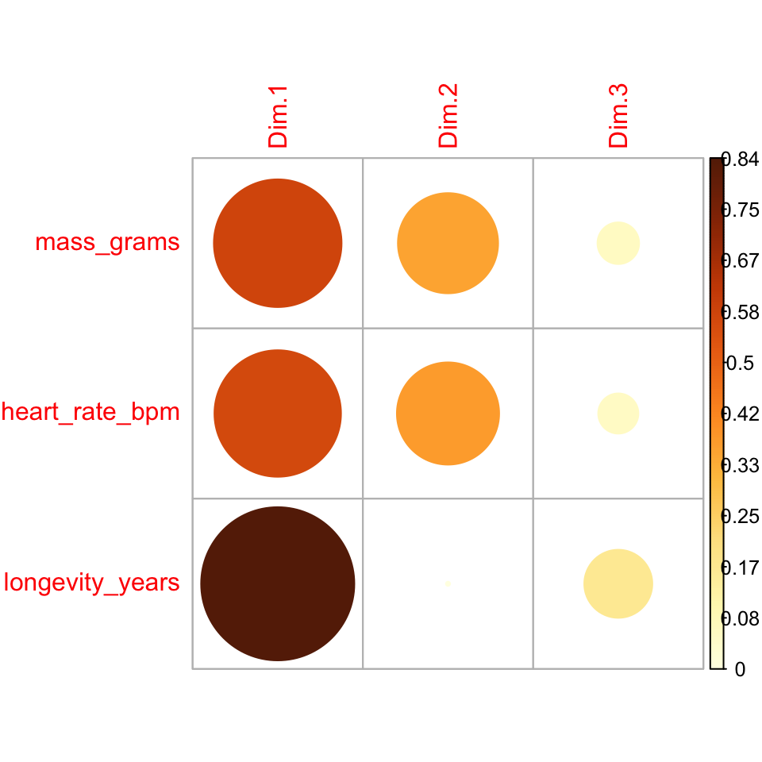
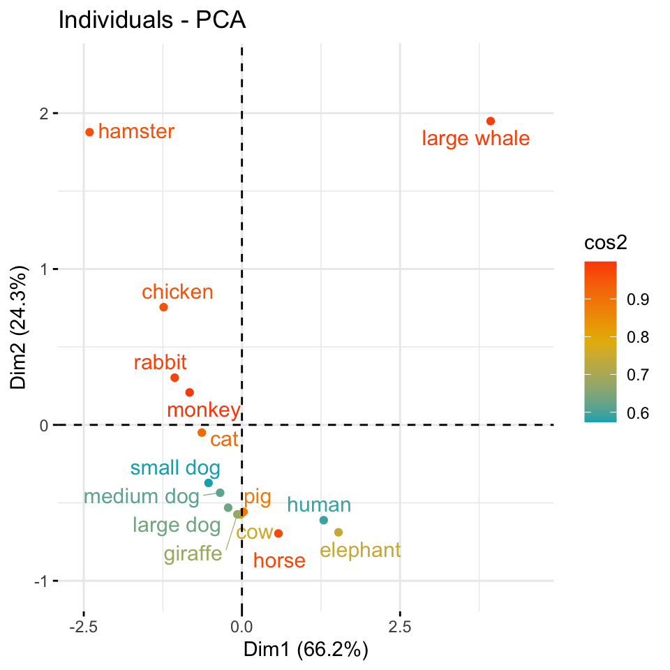
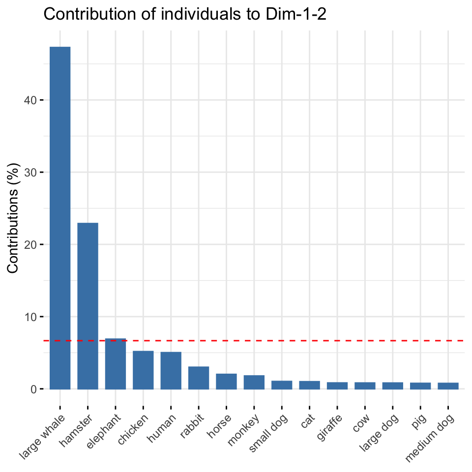
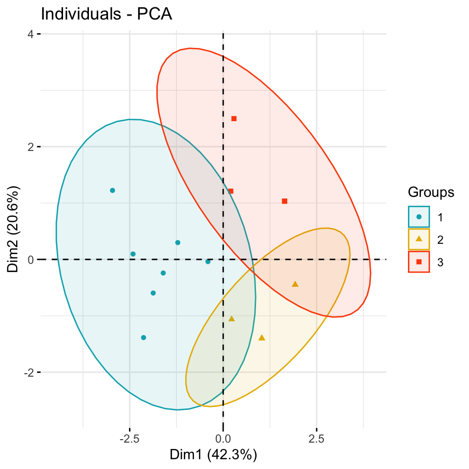
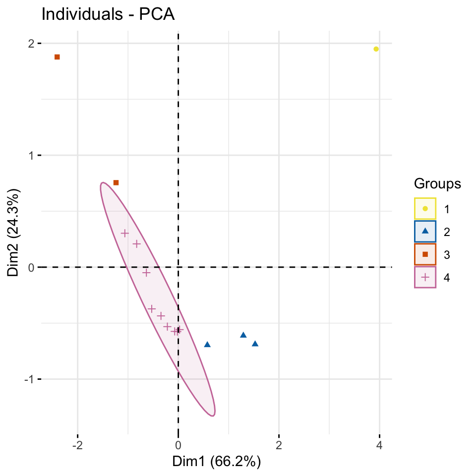
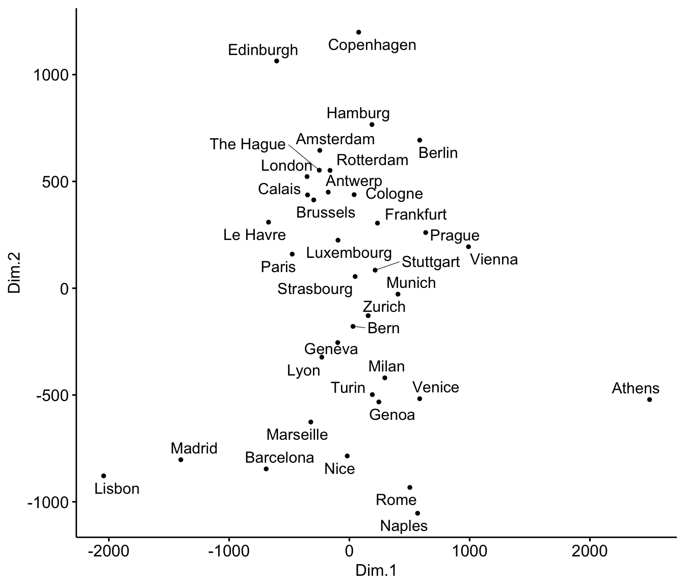
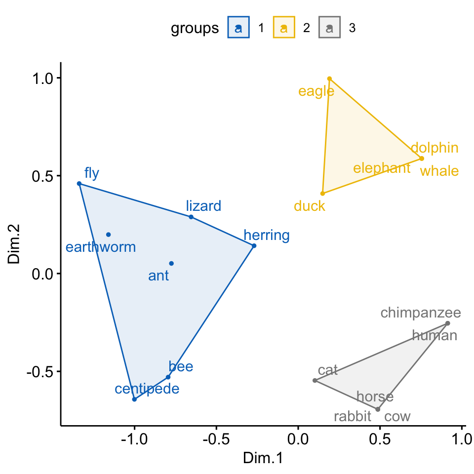

54 Hauptkomponentenanalyse
Version vom August 01, 2023 um 19:21:26

Die Hauptkomponentenanalyse (eng. Principle Component Analysis, abk. PCA) ist ein bedeutendes Verfahren zur Dimensionsreduktion. Wir haben also einen sehr großen Datensatz mit sehr vielen Spalten und wollen Muster in den Beobachtungen finden, die durch die Zeilen definiert sind. Dieses Kapitel umfasst dabei aber nur die notwendigen Verfahren und Anwendungen. Das hat vor allem damit zu tun, dass die Hauptkomponentenanalyse in den Sozialwissenschaften sehr weitreichend genutzt wird. Wir machen hier aber Agrarwissenschaften, also ist es eher ein nebensächlicher Fokus. Ebenso ist die Auswertung von Fragebögen allgemein ein Schwerpunkt der Hauptkomponentenanalyse. Auch werden Fragebögen eher selten in meinem Feld ausgewertet, deshalb hier nur das eine Kapitel, wenn man auch sicherlich viel mehr schreiben könnte.
Das folgende Kapitel basiert zum Teilen auf den Articles - Principal Component Methods in R: Practical Guide. Diese Sammlung an Tutorien geben einen wunderbaren Überblick über alle möglichen Methoden zu der Hauptkomponentenanalyse und deren verwandten Algorithmen. Wenn dich dazu mehr interessiert kann ich das Buch von Kassambara (2017) dir sehr ans Herz legen. Dort findest du eine tolle Übersicht über die Hauptkomponentenanalyse in R.
Was ist grob die Idee der Hauptkomponentenanalyse? Wir wollen Geraden durch unsere Datenwolke ziehen und dabei die Varianz minimieren. Das klingt jetzt wie die Regression und damit hast du auch recht. Die Hauptkomponentenanalyse und die lineare Regression sind nah miteinander verwandt. Damit wären wir schon beim ersten Punkt, Hauptkomponenten beschreiben einen Anteil der erklärten Varianz durch die entsprechende Hauptkomponente. Dabei erklärt grundsätzlich die 1. Hauptkomponente die meiste Varianz gefolfgt von 2. Hauptkomponente und so fort. Die Hauptkomponenten sind somit nach dem Anteil der erklärten Varianz sortiert. Das ist eine grundlegende Eigenschaft der Hauptkomponenten. Darüber hinaus sind auch alle Hauptkomponenten untereinander mit 0 korreliert und somit maximal unkorreliert. Die Hauptkomponenten und damit die Geraden durch die Punktwolke stehen orthogonal oder senkrecht aufeinander.

In der Abbildung 54.1 sehen wir einmal dargestellt, was eine Hauptkomponentenanalyse erreichen will. Wir legen zuerst die 1. Hauptkomponente (PC1) so durch die Daten, dass die Varianz durch die 1. Hauptkomponente maximal minimiert wird. Dann berechnen wir die 2. Hauptkomponente (PC2) so, dass die 2. Hauptkomponente senkrecht auf der 1. Hauptkomponente steht. Hier sehen wir nur eine Möglichkeit, den es gebe ja auch noch andere Drehungen der 2. Hauptkomponente die ebenfalls die Bedingung, das Lot zur 1. Hauptkomponente zu sein, erfüllen würde. Es ist ja dann im Prinzip eine Drehung um die 1. Hauptkomponente als zentrale Achse zu sehen. Wir wählen die lotrechte Repräsentation der 2. Hauptkomponente, die am meisten Varianz erklärt, also die Abstände minimiert, die noch nicht durch die 1. Hauptkomponente minimiert wurden. Somit erklärt die 2. Hauptkomponente immer weniger Varianz als die 1. Hauptkomponente.
Gut klingt jetzt erstmal einleuchtend, aber wie geht das mathematisch? Da sieht es schon etwas komplizierter aus.
lm(y ~ x, tbl)
Call:
lm(formula = y ~ x, data = tbl)
Coefficients:
(Intercept) x
-0.101 0.504 \[ \Sigma = \begin{pmatrix} \operatorname{Var}(x) & \operatorname{Cov}(x, y) \\ \operatorname{Cov}(x, y) & \operatorname{Var}(y) \end{pmatrix} = \begin{pmatrix} 21.6 & 10.9 \\ 10.9 & 6.1 \end{pmatrix} \]
text
\[ \beta_x = \cfrac{\operatorname{Cov}(x, y)}{\operatorname{Var}(x)} = \cfrac{10.9}{21.6} \approx 0.5 \]
tbl %>%
ggplot(aes(x, y)) +
theme_minimal() +
geom_point() +
geom_hline(yintercept = 0, alpha = 0.5) + geom_vline(xintercept = 0, alpha = 0.5) +
geom_abline(slope = 0.515749, intercept = -0.101, color = "red") +
geom_abline(slope = -1.938928, intercept = -0.101, color = "blue") +
annotate("text", x = 8, y = 6, label = "PC1", size = 8, color = "red") +
annotate("text", x = -2.5, y = 9, label = "PC2", size = 8, color = "blue") +
annotate("text", x = -7, y = -1,
label = TeX(r"($y = -0.1 + 0.52 \cdot x$)"), size = 5, color = "red") +
annotate("text", x = 6, y = -2,
label = TeX(r"($y = -0.1 - 1.94 \cdot x$)"), size = 5, color = "blue") +
scale_x_continuous(limits = c(-10, 10), breaks = seq(-10, 10, 1)) +
scale_y_continuous(limits = c(-10, 10), breaks = seq(-10, 10, 1)) +
theme(panel.grid.minor = element_blank())
pca_res <- prcomp(tbl)$rotation
pca_res PC1 PC2
x 0.8887583 -0.4583762
y 0.4583762 0.8887583pca_res[2,] / pca_res[1,] PC1 PC2
0.515749 -1.938928 Das funktioniert nur auf standardisierten Daten. Sonst ist der Intercept nicht 0.
cov(tbl) %>%
eigeneigen() decomposition
$values
[1] 27.2356150 0.4907358
$vectors
[,1] [,2]
[1,] -0.8887583 0.4583762
[2,] -0.4583762 -0.8887583Eigenvalues and Eigenvectors: Properties
Adding orthogonal regression line in ggplot
Wir wollen unseren Daten, also die ganze Datenmatrix einmal so transformieren, dass wir neue Komponenten aus den Daten extrahieren, die die Daten auf einer anderen Dimension beschreiben. Klingt etwas kryptisch, aber im Prinzip handelt es sich bei der Hauptkomponentenanalyse um eine komplexere Transformation der Daten. Wir nutzen dabei die Varianzstruktur und die Varianz/Kovarianzmatrix als unsere Distanzmatrix für die Variablen und Beobachtungen. Im Prinzip also die Korrelation zwischen den einzelnen Variablen in dem Datensatz. Über diese Korrelation zwischen den Spalten und Zeilen wollen wir die Daten reduzieren. Wird die gesamte Varianz der Daten vielleicht nur von wenigen Spalten verursacht? Dann brauchen wir ja nur diese Hauptkomponenten weiter betrachten. Wir nutzen also die Varianz/Kovarianzmatrix als unsere Ähnlichkeitsmatrix, wie schon bei den Clusteranalysen, um hier unbekannte Zusammenhänge zwischen den Spalten und damit dann Hauptkomponenten aufzuklären.
In einer Hauptkomponentenanalyse ersetzen wir die ursprünglichen Spalten eines Datensatzes durch Hauptkomponenten. Die Hauptkomponenten haben so viele Dimensionen wie es Spalten im ursprünglichen Datensatz gibt. Jede Hauptkomponente hat einen Eigenwert (eng. eigenvalue), der den Anteil der erklärten Varianz der Hauptkomponente in den Daten beschreibt. Wir können die Beobachtungen oder Individuen (abk. ind) in den Zeilen betrachten oder aber die Variablen (abk. var) in den Spalten.
Neben der PCA existiert noch das Multidimensional Scaling (abk. MDS). Das MDS ist im Prinzip eine Spezialform der PCA. Im Unterschied zur PCA wird die MDS auf einer Distanzmatrix gerechnet. In einer MDS können wir nicht einfach so unsere Daten reinstecken sondern müssen zuerst die Daten in eine Distanzmatrix umrechnen. Dafür gibt es die Funktion dist() oder as.dist(), wenn wir schon Distanzen vorliegen haben. Daher ist die Anwendung einer MDS nicht besonders komplizierter.
Wenn wir eine PCA in R rechnen wollen, dann haben wir zuerst die Wahl zwischen den Funktionen prcomp() und princomp(). Laut der R-Hilfe hat die Funktion prcomp() eine etwas bessere numerische Genauigkeit. Daher ist die Funktion prcomp() gegenüber princomp() vorzuziehen. Es gibt aber noch eine neuere Implementierung der Funktionalität in dem R Paket FactoMineR und der Funktion PCA(). In diesem Kapitel nutzen wir also das R Paket factoextra um sich Faktoranalysen super anzuschauen und durchzuführen. Dur kannst mehr auf der Webseite Factoextra R Package: Easy Multivariate Data Analyses and Elegant Visualization mehr über das Paket erfahren.
Es gibt eine natürlich große Anzahl an Quellen wie du in R eine PCA oder ein MDS durchführst. In der folgenden Box findest du eine Sammlung an Tutorien und R Code, der dir als Inspiration dienen mag. Ich werde teile von den Tutorien in der Folge verwenden, kann aber natürlich nichts alles nochmal machen.
Wie immer gibt es eine Vielzahl an tollen Tutorien, die die PCA gut erklären. Ich habe hier einmal eine Auswahl zusammengestellt und du kannst dich da ja mal vertiefend mit beschäftigen, wenn du willst. Teile der Tutorien findest du vermutlich hier im Haupttext wieder.
Wir wollen uns jetzt die Hauptkomponentenanalyse an zwei Spieldaten anschauen. Eigentlich werden ja auch gerne Fragebögen mit der Hauptkomponentenanalyse ausgewertet, aber hier muss ich nochmal warten bis ich ein gutes Beispiel in den Beratungen hatte. Dann ergänze ich ein Beispiel bei dem Skrippt zu den Beispielhaften Auswertungen.
54.1 Genutzte R Pakete
Wir wollen folgende R Pakete in diesem Kapitel nutzen.
Am Ende des Kapitels findest du nochmal den gesamten R Code in einem Rutsch zum selber durchführen oder aber kopieren.
54.2 Daten
Beginnen wir mit einem normierten Datensatz aus dem R Paket cluster. Der Datensatz animals wurde von mir noch mit ein paar Tieren ergänzt und schaut sich sechs Eigenschaften von 23 Tieren an. Wir wollen im Folgenden nun herausfinden, ob wir anhand der Eigenschaften in den Spalten die Tiere in den Zeilen in Gruppen einordnen können. Einige der Tiere sind ja näher miteinander verwandt als andere Tiere. Die ursprünglichen Daten liefen noch auf einem \(1/2\)-System, das ändern wir dann zu \(0/1\) damit wir dann auch besser mit den Daten arbeiten können. Für die Algorithmen ist es egal, aber ich habe lieber \(1\) gleich ja und \(0\) gleich nein.
animals_tbl <- read_excel("data/cluster_animal.xlsx", sheet = 1) %>%
clean_names() %>%
mutate(across(where(is.numeric), \(x) x - 1))Schauen wir uns einmal den Datensatz in der Tabelle 54.1 an. Wir sehen, dass wir noch einige fehlende Werte in den Daten vorliegen haben. Das ist manchmal ein Problem, deshalb werden wir im Laufe der Analyse die NA Werte mit na.omit() entfernen.
| animal | warm_blooded | fly | vertebrate | threatened | live_in_groups | hair |
|---|---|---|---|---|---|---|
| ant | 0 | 0 | 0 | 0 | 1 | 0 |
| bee | 0 | 1 | 0 | 0 | 1 | 1 |
| cat | 1 | 0 | 1 | 0 | 0 | 1 |
| centipede | 0 | 0 | 0 | 0 | 0 | 1 |
| chimpanzee | 1 | 0 | 1 | 1 | 1 | 1 |
| cow | 1 | 0 | 1 | 0 | 1 | 1 |
| dolphin | 1 | 0 | 1 | 1 | 1 | 0 |
| duck | 1 | 1 | 1 | 0 | 1 | 0 |
| eagle | 1 | 1 | 1 | 1 | 0 | 0 |
| earthworm | 0 | 0 | 0 | 0 | 0 | 0 |
| elephant | 1 | 0 | 1 | 1 | 1 | 0 |
| fly | 0 | 1 | 0 | 0 | 0 | 0 |
| frog | 0 | 0 | 1 | 1 | NA | 0 |
| herring | 0 | 0 | 1 | 0 | 1 | 0 |
| horse | 1 | 0 | 1 | 0 | 1 | 1 |
| human | 1 | 0 | 1 | 1 | 1 | 1 |
| lion | 1 | 0 | 1 | NA | 1 | 1 |
| lizard | 0 | 0 | 1 | 0 | 0 | 0 |
| lobster | 0 | 0 | 0 | 0 | NA | 0 |
| rabbit | 1 | 0 | 1 | 0 | 1 | 1 |
| salmon | 0 | 0 | 1 | 0 | NA | 0 |
| spider | 0 | 0 | 0 | NA | 0 | 1 |
| whale | 1 | 0 | 1 | 1 | 1 | 0 |
Der Tierdatensatz ist schön, da wir es hier nur mit 0/1 Werten zu tun haben. Wir werden später in dem preprocessing der Daten sehen, dass wir alle Spalten in der gleichen Spannweite der Werte wollen. Das klingt immer etwas kryptisch, aber der nächste Datensatz über verschiedene Kreaturen macht es deutlicher.
Eine andere Art die Daten zu Gruppieren kannst du im Tutorium Clustering Creatures nochmal nachvollziehen.
Im Folgenen einmal der Datensatz, den wir dann in der gleichen Exceldatei finden nur eben auf dem zweiten Tabellenblatt. Wir reinigen noch die Namen und setzen die creature-Spalte auf Klein geschrieben. Wie du siehst, haben wir dann nur 15 Kreaturen und drei Spalten mit dem Gewicht, der Herzrate und dem maximalen möglichen Alter.
creature_tbl <- read_excel("data/cluster_animal.xlsx", sheet = 2) %>%
clean_names() %>%
mutate(creature = tolower(creature))In der Tabelle 54.2 sehen wir nochmal die Daten dargestellt und hier erkennst du auch gut, wo das Problem liegt. Die Masse der Tiere reicht von \(6g\) beim Hamster bis \(120000000g\) beim Wal. Diese Spannweiten in einer Spalte und zwischen den Spalten führt dann zu Problemen bei den Algorithmen. Deshalb müssen wir hier Daten nochmal normalisieren oder aber standardisieren. Je nachdem was da besser passt.
| creature | mass_grams | heart_rate_bpm | longevity_years |
|---|---|---|---|
| human | 9.0e+04 | 60 | 70 |
| cat | 2.0e+03 | 150 | 15 |
| small dog | 2.0e+03 | 100 | 10 |
| medium dog | 5.0e+03 | 90 | 15 |
| large dog | 8.0e+03 | 75 | 17 |
| hamster | 6.0e+01 | 450 | 3 |
| chicken | 1.5e+03 | 275 | 15 |
| monkey | 5.0e+03 | 190 | 15 |
| horse | 1.2e+06 | 44 | 40 |
| cow | 8.0e+05 | 65 | 22 |
| pig | 1.5e+05 | 70 | 25 |
| rabbit | 1.0e+03 | 205 | 9 |
| elephant | 5.0e+06 | 30 | 70 |
| giraffe | 9.0e+05 | 65 | 20 |
| large whale | 1.2e+08 | 20 | 80 |
54.3 Daten standardisieren
Die Standardisierung zwingt Variablen in eine \(\mathcal{N(0,1)}\) Standardnormalverteilung. Das heißt, wir transformieren alle Variablen auf einen Mittelwert von \(0\) und einer Standardabweichung von \(1\). Hier nochmal die Formel für die Standardisierung oder auch \(z\)-Transformation.
\[ z = \cfrac{x_i - \bar{x}}{s_x} \] Wie wir hier sehen ziehen wir von jeder \(i\)-ten Beobachtung den Mittlwert von allen Beobachtungen ab. Dann teilen wir noch durch die Standardabweichung alle Beobachtungen. Am Ende ist dann damit unser Mittelwert auf \(0\) und unsere Standardabweichung auf \(1\).
Die Standardisierung macht dann auch die Daten sehr schon gleichförmig. Hier nutzen wir auch die Funktion transform() aus dem R Paket dlookr mit der Option zscore. Damit wir auch auf jeden Fall sicher gehen, dass wir die richtige Funktion nutzen, schreiben wir dlookr::transform() und damit ist sichergestellt, dass wir auch die Funktion transform() aus dem R Paket dlookr nutzen.
std_creature_tbl <- creature_tbl %>%
mutate(mass_grams = dlookr::transform(mass_grams, "zscore"),
heart_rate_bpm = dlookr::transform(heart_rate_bpm, "zscore"),
longevity_years = dlookr::transform(longevity_years, "zscore"))
std_creature_tbl# A tibble: 15 × 4
creature mass_grams heart_rate_bpm longevity_years
<chr> <transfrm> <transfrm> <transfrm>
1 human -0.2739558 -0.5739180 1.6794647
2 cat -0.2768074 0.2094888 -0.5409814
3 small dog -0.2768074 -0.2257372 -0.7428402
4 medium dog -0.2767102 -0.3127824 -0.5409814
5 large dog -0.2766129 -0.4433502 -0.4602379
6 hamster -0.2768702 2.8208449 -1.0254424
7 chicken -0.2768236 1.2975538 -0.5409814
8 monkey -0.2767102 0.5576696 -0.5409814
9 horse -0.2379870 -0.7131904 0.4683123
10 cow -0.2509487 -0.5303954 -0.2583792
11 pig -0.2720115 -0.4868728 -0.1372639
12 rabbit -0.2768398 0.6882374 -0.7832119
13 elephant -0.1148507 -0.8350536 1.6794647
14 giraffe -0.2477083 -0.5303954 -0.3391227
15 large whale 3.6116436 -0.9220988 2.0831822 Die Funktion PCA(), die wir im Folgenden verwenden wollen, wird zwar auch die Daten intern von sich aus standardisieren, wenn die nicht standardisiert wurden. Ich mag es aber nicht, wenn wichtige Schritte in Funktionen begraben werden, deshlab hier nochmal das Beispiel, wie man es macht.
54.4 Das data.frame() Problem
Leider ist es so, dass fast alle Pakete im Kontext der Clusteranalyse mit den Zeilennamen bzw. row.names() eines data.frame() arbeiten. Das hat den Grund, dass wir gut das Label in den Zeilennamen parken können, ohne das uns eine Spalte in den Auswertungen stört. Meistens ist das Label ja ein character und soll gar nicht in den Clusteralgorithmus mit rein. Deshalb müssen wir hier einmal unsere tibble() in einen data.frame() umwandeln. Die tibble() haben aus gutem Grund keine Zeilennamen, die Zeilennamen sind ein Ärgernis und Quelle von Fehlern und aus gutem Grund nicht in einem tibble() drin. Hier brauchen wir die Zeilennamen aber.
Wir bauen uns also einmal einen data.frame() für unseren Tierdatensatz und setzen die Tiernamen als Zeilennamen bzw. row.names(). Wir entfernen dann auch noch schnell alle fehlenden Werte, denn wir wollen usn hier nicht noch mit der Imputation von fehlenden Werten beschäftigen.
animals_df <- animals_tbl %>%
na.omit() %>%
as.data.frame() %>%
set_rownames(.$animal) %>%
select(-animal)Das Ganze machen wir dann auch noch einmal für die normalisierten Kreaturendaten. Wir wollen dann ja nur auf den normalisierten Daten weitermachen.
std_creature_df <- std_creature_tbl %>%
as.data.frame() %>%
set_rownames(.$creature) %>%
select(-creature)54.5 Hauptkomponentenanalyse
fly werden nochmal die Koordinaten deutlich.Es gibt viele Implementierungen der Hauptkomponentenanalyse in R. Wir nutzen die Funktion PCA() aus dem R Paket FactoMineR für die Analyse von kontinuierlichen Variablen. Denk immer daran, es kann maximal nur so viele Hauptkomponenten geben, wie wir auch Spalten in den Daten vorliegen haben. Folgende wichtige Funktionen werden wir jetzt einmal nutzen. Es gibt noch mehr, aber das übersteigt die einfache Hauptkomponentenanalyse, die wir uns hier anschauen wollen.
Die zentrale Funktion ist aber die Funktion PCA() womit wir die eigentliche Hauptkomponentenanalyse erstmal durchführen, wenn kontinuierliche Variablen vorliegen. Die Funktion nimmt die Daten und berechnet dann intern die Varianz/Kovarianzmatrix. Die Varianz/Kovarianzmatrix wird dann als Distanzmatrix genutzt um die Hauptkomponenten und deren Eigenwerte zu berechnen.
Neben der Funktion PCA() aus dem R Paket FactoMineR für die Analyse von kontinuierlichen Variablen gibt es noch eine Reihe anderer Funktionen für eine Hauptkomponentenanalyse wenn wir kategoriale Variablen oder eine Mischung vorliegen haben. Hier mal die vollständige Liste.
- PCA - Principal Component Analysis, zur Analyse eines Datensatzes mit kontinuierlichen Variablen
- CA - Correspondence Analysis (Korrespondenzanalyse), für die Analyse der Assoziation zwischen zwei kategorialen Variablen.
- MCA - Multiple Correspondence Analysis, für die Analyse eines Datensatzes mit kategorialen Variablen.
- FAMD - Factor Analysis of Mixed Data (Faktorenanalyse gemischter Daten), für die Analyse eines Datensatzes, der sowohl kontinuierliche als auch kategoriale Variablen enthält.
- MFA - Multiple Factor Analysis, für die Analyse eines Datensatzes, der in Gruppen strukturierte Variablen enthält.
54.5.1 PCA - Principal Component Analysis
Bei der Nutzung der Funktion PCA() ist für mich wichtig, dass wir nicht gleich irgendwelche Abbildungen erhalten, deshalb ist hier im Skript graph = FALSE gewählt. Mit der Option scale.unit = TRUE musst du die Daten selber nicht standardisieren sondern die Funktion PCA() macht das für dich. Manchmal sind Fragebögen sehr groß mit mehr als Dutzenden von Fragen, da macht es Sinn sich nicht die Anzahl an Fragen als Hauptkomponenten wiedergeben zu lassen. Die Option ncp = 5 zum Beispiel schränkt hier die Anzahl auf 5 Hauptkomponenten ein. Bei den Kreaturen macht es keinen Sinn, da erhalten wir natürlich nur drei Hauptkomponenten, da wir nur drei Spalten in dem Datensatz haben.
pca_animals <- PCA(animals_df, scale.unit = TRUE,
ncp = 5, graph = FALSE)pca_creature <- PCA(std_creature_df, scale.unit = TRUE,
ncp = 5, graph = FALSE)Folgende Funktionen sind wichtig um die klassische Hauptkomponentenanalyse einmal zu visualisieren und zu bewerten. Die Namen folgen alle einem Schema im Paket FactoMineR, so dass wir hier nur Kleinigkeiten im Namen ändern müssen um alle Funktionen zu nutzen.
-
get_pca_ind(),get_pca_var(): Extrahiert die Ergebnisse für Individuen bzw. Variablen. -
fviz_pca_ind(),fviz_pca_var(): Visualisierung der Ergebnisse für Individuen bzw. Variablen. -
fviz_pca_biplot(): Erstellt einen Biplot der Individuen und Variablen.
54.5.2 CA - Correspondence Analysis
Die CA-Analyse funktioniert nur auf einer \(n \times k\) Tabelle. Daher können wir nur zwei Variablen mit Kategorien miteinander in Verbindung setzen. Eigentlich sehen wir hier eher einen großen \(\mathcal{X}^2\)-Test. Deshalb gehe ich aktuell nicht auf die Lösung hier tiefer ein.
Wir nutzen die Correspondence Analysis zur Analyse des Zusammenhangs zwischen zwei kategorialen Variablen. Also eher ein großer \(\mathcal{X}^2\)-Test mit anderen Mitteln auf einer \(n \times k\) Tabelle.
CA(tbl, ncp = 5, graph = FALSE)Wir erhalten alle wichtigen Informationen aus einer Correspondence Analysis mit den folgenden Funktionen.
-
get_ca_row(),get_ca_col(): Extrahiert die Ergebnisse für Zeilen bzw. Spalten. -
fviz_ca_row(),fviz_ca_col(): Visualisierung der Ergebnisse für Zeilen bzw. Spalten. -
fviz_ca_biplot(): Erstellt einen Biplot der Individuen und Variablen.
Wir betrachteten den Fall hier nicht weiter, da er wirklich sehr speziell ist und nur selten vorkommt.
54.5.3 MCA - Multiple Correspondence Analysis
Wir nutzen die Multiple Correspondence Analysis für die Analyse eines Datensatzes mit kategorialen Variablen.
MCA(tbl, ncp = 5, graph = FALSE)Wir erhalten dann wiederum alle wichtigen Informationen und Abbildungen über folgende Funktionen.
-
get_mca_ind(),get_mca_var(): Extrahiert die Ergebnisse für Individuen bzw. Variablen. -
fviz_mca_ind(),fviz_mca_var(): Visualisierung der Ergebnisse für Individuen bzw. Variablen. -
fviz_mca_biplot(): Erstellt einen Biplot der Individuen und Variablen.
54.5.4 FAMD - Factor Analysis of Mixed Data
Für die Analyse eines Datensatzes, der sowohl kontinuierlichen Variablen als auch kategorialen Variablen enthält nutzen wir die Factor Analysis of Mixed Data.
FAMD(tbl, ncp = 5, graph = FALSE)Auch hier haben wir die wichtigen Funktionen für die Darstellung einmal dargestellt.
-
get_famd_ind(),get_famd_var(): Extrahiert die Ergebnisse für Individuen bzw. Variablen. -
fviz_famd_ind(),fviz_famd_var(): Visualisierung der Ergebnisse für Individuen bzw. Variablen.
54.5.5 MFA - Multiple Factor Analysis
Komplexer wird es, wenn wir eine Multiple Factor Analysis durchführen wollen. In diesem Fall ist es die Analyse eines Datensatzes, der in Gruppen strukturierte Variablen enthält.
MCA(X, ncp = 5, graph = FALSE)Auch gibt es bei der Multiple Factor Analysis ein Set an Funktionen, die wir hauptsählcihc benötigen.
-
get_mfa_ind(),get_mfa_var(): Extrahiert die Ergebnisse für Individuen bzw. Variablen. -
fviz_mfa_ind(),fviz_mfa_var(): Visualisierung der Ergebnisse für Individuen bzw. Variablen.
Weitere Funktionen finden sich dann noch auf der Tutoriumsseite zu der MFA - Multiple Factor Analysis.
54.6 Darstellung der Ergebnisse
Im Folgenden betrachten wir dann die Hauptkomponentenanalyse auf drei Ebenen. Wir konzentrieren uns hier erstmal nur auf die Beispiele aus der Funktion PCA(). Prinzipiell sind die Analysen für die anderen Funktionen ähnlich und die Interpretation unterscheidet sich nur leicht.
- Auf der Ebene der Eigenwerte: Wir entscheiden, wie viele Hauptkomponenten wir eigentlich in die weitere Analyse nehmen wollen.
-
Auf der Ebene der Variablen: Wir betrachten die Spalten und schauen wie sich die Spalten zueinander und den Beobachtungen verhalten. In der R Welt enden dann die Funktionen
*_var. -
Auf der Eben der Individuen: Wir schauen uns einmal die Zeilen an und versuchen zu verstehen, wie sich die einzelenen Beobachtungen oder Individuen verhalten. Gibt es hier Auffälligkeiten? In der R Welt enden dann die Funktionen
*_ind.
54.6.1 Ebene der Eigenwerte
Die Eigenwerte messen die Menge der von jeder Hauptkomponente beibehaltenen Variation. Damit repräsentieren die Eigenwerte die Varianz/Kovarianzmatrix der Daten. Die Eigenwerte sind für die ersten Hauptkomponenten grundsätzlich groß und für die nachfolgenden Hauptkomponente immer kleiner. Das heißt, die ersten Hauptkomponente beschreiben Variablen mit der größten Variation im Datensatz. Wie schon gesagt, wir erschaffen neue Variablen aus den Daten, die wir Hauptkomponenten nennen. Jede Hauptkomponente hat einen Eigenwert, der beschreibt, wie viel Varianz die Hauptkomponente in den Daten erklären kann.
Wenn du dich ein wenig mit Eigenwerten auskennst, dann weißt du, dass Eigenwerte immer auf einer Matrix berechnet werden. In unserem Fall werden die Eigenwerte der Hauptkomponeten auf der Varianz/Kovarianzmatrix der standardisierten Daten berechnet. Im Folgenden siehst du einmal die Varianz/Kovarianzmatrix \(\boldsymbol{\Sigma_x}\) für die Datenmatrix \(x\). Wie du siehst, kann diese Matrix sehr groß werden. Du musst dir vorstellen, dass jedes \(x_1\) bis \(x_n\) jeweils eine Spalte in deiner Datenmatrix \(\boldsymbol{x}\) entspricht. Damit hätte unser Tierdatensatz zum Beispiel \(x_1\) bis \(x_5\) und die Varianz/Kovarianzmatrix hätte fünf Zeilen und Spalten.
\[ \boldsymbol{\Sigma_x} = \begin{pmatrix}\operatorname{Var}(x_1) & \operatorname{Cov}(x_1,x_2) & \cdots & \operatorname{Cov}(x_1,x_n) \\ \\ \operatorname{Cov}(x_2,x_1) & \operatorname{Var}(x_2) & \cdots & \operatorname{Cov}(x_2,x_n) \\ \\ \vdots & \vdots & \ddots & \vdots \\ \\ \operatorname{Cov}(x_n,x_1) & \operatorname{Cov}(x_n,x_2) & \cdots & \operatorname{Var}(x_n) \end{pmatrix} \]
Hier einmal das Beispiel der Varianz/Kovarianzmatrix für den Datensatz animals_df. Wie du siehst liegen auf der Diagonalen die Varianzen. In dem Rest der Matrix findest du dann immer die Kovarainz zwischen den Variablen. Achtung, die Kovarianz ist nicht die Korrelation. Zwar bedeutet eine Kovarianz von 0, dass die beiden Variablen nichts miteinander zu tun haben, aber die Kovarianz ist nicht auf 1 skaliert. Wir können auch sehr viel größere Werte für die Kovarianz beobachten.
warm_blooded fly vertebrate threatened live_in_groups hair
warm_blooded 0.25 -0.03 0.18 0.14 0.10 0.07
fly -0.03 0.18 -0.05 -0.02 -0.04 -0.05
vertebrate 0.18 -0.05 0.21 0.10 0.08 0.01
threatened 0.14 -0.02 0.10 0.24 0.06 -0.04
live_in_groups 0.10 -0.04 0.08 0.06 0.24 0.04
hair 0.07 -0.05 0.01 -0.04 0.04 0.26Für den Fall von zwei Variablen \(x_1\) und \(x_2\) können wir die Idee der Kovarianz nochmal nachvollziehen. Später rechnen wir dann die Hauptkomponentenanalyse auf der großen Matrix, aber ich kann dir den Zusammenhang leider nur für zwei Variablen erklären, den zweidimensional kriege ich noch hin. Wir können mit folgender Formel die Kovarianzen zwischen den beiden Variablen \(x_1\) und \(x_2\) berechnen.
\[ \operatorname{Cov}(x_2,x_1) = \sum_{i=1}^n(x_{1i}-\bar{x_1})(x_{2i}-\bar{x_2}) \]
Nochmal als Erinnerung, die Formel berechnet die quadrierten Abweichung der Beobachtungen von \(x_1\) zum Mittelwert \(\bar{x}_1\) und somit die Varianz \(\operatorname{Var}(x_1)\) von \(x_1\).
\[ \operatorname{Var}(x_1) = \sum_{i=1}^n(x_{1i}-\bar{x}_1)^2 \]
Ebenso berechnet diese Formel die quadrierten Abweichung der Beobachtungen von \(x_2\) zum Mittelwert \(\bar{x}_2\) und damit die Varianz \(\operatorname{Var}(x_2)\) von \(x_2\).
\[ \operatorname{Var}(x_2) = \sum_{i=1}^n(x_{2i}-\bar{x}_2)^2 \]
Das Ganze ist natürlich sehr trocken. Deshalb füttern wir einmal die Variablen \(x_1\) und \(x_2\) mit echten Daten und erschaffen uns den Datensatz cov_tbl. In Tabelle 54.3 ist der Zusammenhang nochmal Schritt für Schritt aufgeschlüsselt wie sich die Zahlen grob berechnen. Ich habe ein, zwei Schritte ausgelassen,a ber die ergänzt du fix selber.
Dann können wir uns einmal den Mittelwert und die Varianz für die beiden Variablen \(x_1\) und \(x_2\) berechnen und dann direkt in der Abbildung 54.4 verwenden.
# A tibble: 2 × 3
key mean var
<chr> <dbl> <dbl>
1 x_1 1.77 0.642
2 x_2 1.87 0.339In der folgenden Abbildung 54.4 siehst du einmal die Konzepte der Varianz für \(x_1\) in Subplot A und \(x_2\) in Subplot B dargestellt. Die durchgezogene Linie stellt dabei den Mittelwert für die beiden Variablen dar. Die Varianz berechnet sich jetzt als der quadrierte Abstand von den Beobachtungen zu den Mittelwerten. Der Abstand ist als gestrichelte Linie dargestellt. Faktisch addierst du die sich ergebenden Quadrate auf. Bei der Kovarianz sind es keine Quadrate, sondern Rechtecke. Die berechnest nämlich einmal den Abstand einer Beobachtung zum Mittelwert von \(x_1\) und einmal den Abstand zum Mittelwert von \(x_2\). Die beiden Abstände \((x_{1i}-\bar{x_1})\) und \((x_{2i}-\bar{x_2})\) multiplizierst du und addierst dann diese Rechtecke auf.

In der folgenden Tabelle 54.3 siehst du dann das Vorgehen nochmal numerisch. Wichtig ist hierbei, dass wir am Ende die Varianz und die Kovarianz berechnen können indem wir die Summen \(\sum\) durch \(n-1\) gleich 6 teilen.
| \(\boldsymbol{x_1}\) | \(\boldsymbol{x_2}\) | \(\boldsymbol{(x_{2i}-\bar{x}_2)^2}\) | \(\boldsymbol{(x_{1i}-\bar{x}_1)^2}\) | \(\boldsymbol{(x_{1i}-\bar{x}_1)(x_{2i}-\bar{x}_2)}\) |
|---|---|---|---|---|
| 1.2 | 0.8 | 0.94 | 0.45 | 0.65 |
| 1.8 | 1.0 | 0.60 | 0.01 | 0.06 |
| 1.3 | 1.2 | 0.33 | 0.33 | 0.33 |
| 1.7 | 1.9 | 0.02 | 0.03 | -0.02 |
| 2.6 | 2.0 | 0.05 | 0.53 | 0.17 |
| 1.8 | 2.7 | 0.86 | 0.03 | -0.07 |
| 2.7 | 2.8 | 1.06 | 0.69 | 0.85 |
| \(\sum\) | 3.86 | 2.05 | 1.97 | |
| \(\cfrac{\sum}{n-1}\) | 0.64 | 0.34 | 0.33 |
Schauen wir mal, ob wir richtig gerechnet haben und die Varianz für \(x_1\) mit 0.64, die Varianz von \(x_2\) mit 0.34 sowie die Kovarianz von \(x_1\) und \(x_2\) auch R wiederfinden. Wir nutzen die Funktion cov() um uns die Varianz/Kovarianzmatrix wiedergeben zu lassen.
Wie wir sehen können wir die Werte in der Varianz/Kovarianzmatrix wiederfinden. Das ist ja mal ein Erfolg. Wir nutzen also die Varianz/Kovarianzmatrix als unsere Ähnlichkeitsmatrix, wie schon bei den Clusteranalysen, um hier unbekannte Zusammenhänge zwischen den Spalten und damit dann Hauptkomponenten aufzuklären.
Mit Hilfe der Eigenwerte lässt sich die Anzahl der Hauptkomponenten bzw. Dimensionen bestimmen, die nach der PCA beibehalten werden sollen. Wir wollen selten alle Hauptkomponenten berücksichtigen. Es geht hier ja auch darum die Dimensionen der Daten zu reduzieren. Wenn wir alle Hauptkomponenten weiterverwenden würden, dann könnten wir auch den ursprünglichen Datensatz nutzen. Die Eigenwerte und der Anteil der Varianzen, die von den Hauptkomponenten beibehalten werden, können mit folgenden Funktionen extrahiert werden.
-
get_eigenvalue(): Extrahiert die Eigenwerte/Varianzen der Hauptkomponenten -
fviz_eig(): Visualisierung der Eigenwerte
Dabei bedeutet ein Eigenwert > 1, dass die Hauptkomponenten mehr Varianz erklären als eine der ursprünglichen Variablen in den standardisierten Daten. Dies wird üblicherweise als Grenzwert für die Beibehaltung der Hauptkomponenten verwendet. Dies trifft nur zu, wenn die Daten standardisiert sind.
eig_animals <- get_eigenvalue(pca_animals) %>%
as_tibble()
eig_animals # A tibble: 6 × 3
eigenvalue variance.percent cumulative.variance.percent
<dbl> <dbl> <dbl>
1 2.54 42.3 42.3
2 1.24 20.6 62.9
3 0.848 14.1 77.1
4 0.723 12.1 89.1
5 0.515 8.58 97.7
6 0.137 2.29 100 Die Summe aller Eigenwerte für die Tiere ergibt eine Gesamtvarianz von 6. Jetzt können wir ganz einfach den Anteil der erklärten Varianz von jedem Eigenwert berechnen. In der zweiten Spalte finden wir dann die Werte der Eigenwerte geteilt durch die Gesamtvarianz. Daher ist \(42.35\) gleich \(2.54\) geteilt durch \(6\). Der kumulative Prozentsatz der erklärten Variation wird durch Addition der aufeinander folgenden Anteile der erklärten Variation ermittelt.
eig_creature <- get_eigenvalue(pca_creature) %>%
as_tibble()
eig_creature# A tibble: 3 × 3
eigenvalue variance.percent cumulative.variance.percent
<dbl> <dbl> <dbl>
1 1.99 66.2 66.2
2 0.730 24.3 90.5
3 0.285 9.49 100 Die Summe aller Eigenwerte für die Kreaturen ergibt eine Gesamtvarianz von 3. Damit können wir dann auch einfach die anderen Werte in den Spalten nachvollziehen.
Jetzt stellt sich natürlich die Frage, wie viele der Hauptkomponenten sollen den jetzt zukünftig berücksichtigt werden? Leider gibt es keine allgemein anerkannte objektive Methode, um zu entscheiden, wie viele Hauptkomponenten ausreichend sind. Dies hängt von dem jeweiligen Anwendungsbereich und dem jeweiligen Datensatz ab. In der Praxis neigen wir dazu, die ersten paar Hauptkomponenten zu betrachten, um interessante Muster in den Daten zu finden. Dafür nutzen wir den Scree Plot und entscheiden anhand der Beuge in dem Plot. Wenn wir nur wenige Variablen in den Daten haben, dann kann es sein, dass wir nur wenige Hauptkomponenten raus schmeißen. In der Abbildung 54.5 siehst du einmal die beiden Scree Plots für die beiden Datensätze.
fviz_eig(pca_animals, addlabels = TRUE)
fviz_eig(pca_creature, addlabels = TRUE)
Wir sehen für die Tierdaten, dass die erste Hauptkomponente gut 42% der Varianz in den Daten erklärt, die folgende Hauptkomponente dann nur noch 20% und so weiter. Hier sehen wir dann auch die Beuge und könnten schließen, dass die ersten beiden Hauptkomponenten ausreichen um den Datensatz zu beschreiben. Bei den Kreaturendaten sieht es so aus, als ob wir die Datan alleinig mit der ersten Hauptkomponente erklären könnten. Wir sehen ja, dass gut 62% der Varianz durch die erste Hauptkomponente erklärt wird.
54.6.2 Ebene der Variablen
get_*_var() für andere Funktionen aus FactoMineR
Du kannst einfach das * in get_*_var() durch den klein geschriebenen Funktionaufruf von MCA, FAMD und MFA ersetzen um dir dann auch die Ergebnisse analog zu der PCA herausgeben zu lassen. Die Interpretation ist ähnlich bis gleich.
Schauen wir jetzt einmal die Informationen der Variablen also Spalten der Hauptkomponentenanalyse an. Wir erhalten jetzt also die Informationen zu den einzelnen Hauptkomponenten, die ja die Variablen bzw. Spalten der Daten repräsentieren. Wir erhalten die Informationen über die Funktion get_pca_var().
var_animals <- get_pca_var(pca_animals)
var_creature <- get_pca_var(pca_creature)
var_creaturePrincipal Component Analysis Results for variables
===================================================
Name Description
1 "$coord" "Coordinates for the variables"
2 "$cor" "Correlations between variables and dimensions"
3 "$cos2" "Cos2 for the variables"
4 "$contrib" "contributions of the variables" Schauen wir uns einmal an was wir mit den Informationen über die Variablen durch die Funktion get_pca_var() machen können.
-
coord: Koordinaten der Variablen zur Erstellung eines Streudiagramms. Wir nutzen meistens nur die ersten beiden Hauptkomponenten, da wir sonst kein zweidimensionalen Scatterplot machen können. -
cor: Die Korrelation zwischen den ursprünglichen Variablenwerten in den Zeilen und den neuen Hauptkomponenten in den Spalten. -
cos2: stellt die Qualität der Darstellung der Variablen auf der Faktorkarte dar. Es wird berechnet als die quadrierten Koordinaten:cos2 = coord * coord -
contrib:enthält die Beiträge (in Prozent) der Variablen zu den Hauptkomponenten. Der Beitrag einer Variablen zu einer bestimmten Hauptkomponente ist (in Prozent): (cos2* 100) / (gesamtercos2der Komponente).
Im Folgenden bewerten wir die Qualität einer Variable nach den cos2-Werten oder ihren Beitragswerten zu den Hauptkomponenten dargestellt durch die contrib-Werte. Wir nutzen hier jetzt aber erstmal die cos2-Werte, weil sonst hier alles an Abbildungen explodiert.
- Ein hoher cos2-Wert deutet auf eine gute Darstellung der Variablen auf der Hauptkomponente hin. In diesem Fall ist die Variable nahe am Umfang des Korrelationskreises positioniert.
- Ein niedriger cos2-Wert zeigt an, dass die Variable nicht perfekt durch die PC’s repräsentiert ist. In diesem Fall befindet sich die Variable in der Nähe der Kreismitte.
- Für eine bestimmte Variable ist die Summe des cos2 aller Hauptkomponenten gleich eins.
In der Abbildung 54.6 sehen wir einmal die Zusammenhänge von den cos2-Werten und den jeweiligen Hauptkomponenten. Wir setzen is.corr = FALSE, weil wir keine Korrelation abbiden wollen sondern cos2-Werte.
corrplot(var_animals$cos2, is.corr = FALSE)
corrplot(var_creature$cos2, is.corr = FALSE)
animals_df
std_creature_dfcos2-Werten und den jeweiligen HauptkomponentenWir sehen bei den Tierdaten, dass die die erste Hauptkomponente Dim.1 die Variablen warm_blooded, vertebrate und etwas weniger threatened und live_in_groups beschreibt. Die zweite Hauptkomponente Dim.2 repräsentiert die Variable hair. Die dritte Hauptkomponente deckt fly ab. Die vierte Hauptkomponente beschreibt dann live_groups etwas stärker als die erste Hauptkomponente. Die fünfte Hauptkomponente können wir fast ignorieren. Bei den Kreaturendaten sehen wir das die erste Hauptkomponente fast alle Variablen repräsentiert. Die zweite Hauptkomponente beschreibt dann noch etwas mass_grams und heart_rate_bpm.
In der Abbildung 54.7 sehen wir die gleichen Informationen nochmal als Säulendiagramm dargestellt. Hier ist es eventuell numerisch schöner und besser zu sehen, wie sich die cos2-Werte für die erste und zweite Hauptkomponente verhalten. Du musst hier nämlich entscheiden, wie viele Hauptkomponenten du zusammen betrachten willst. Hier habe ich über axes = 1:2 die ersten beiden Hauptkomponenten gewählt.
fviz_cos2(pca_animals, choice = "var", axes = 1:2)
fviz_cos2(pca_creature, choice = "var", axes = 1:2)
animals_df
std_creature_dfcos2-Werten und die ersten beiden Hauptkomponenten Dim.1 und Dim.2.Als nächstes wollen wir uns dann mal die ersten beiden Hauptkomponenten Dim.1 und Dim.2 in einer Abbildung anschauen. In der Abbildung 54.8 sehen wir das Korrelationsdiagramm der Variablen für die ersten beiden Hauptkomponenten. Über die Option axes = kannst du dir auch andere Kombinationen von zwei Hauptkomponenten anschauen. Das Korrelationsdiagramm zeigt die Beziehungen zwischen allen Variablen und kann wie folgt interpretiert werden:
- Positiv korrelierte Variablen sind zusammen gruppiert.
- Negativ korrelierte Variablen befinden sich auf gegenüberliegenden Seiten des Ursprungs der Grafik oder auch den gegenüberliegende Quadranten.
- Der Abstand zwischen den Variablen und dem Ursprung misst die Qualität der Variablen im Bezug auf den erklärenden Anteil. Variablen, die vom Ursprung entfernt sind, sind bedeutender als Variablen nahe des Ursprungs.
Wenn eine Variable nur durch zwei Hauptkomponenten, also zum Beispiel die Dim.1 und die Dim., perfekt repräsentiert wird, ist die Summe des cos2 von diesen beiden Hauptkomponenten gleich eins. In diesem Fall werden die Variablen auf dem Korrelationskreis positioniert und der Pfeil geht damit vom Ursprung direkt zum Kreis. In Abbildung 54.8 (b) sind die Variablen heart_rate_bpm und mass_grams direkt auf dem Korrelationskreis. Daher sind diese beiden Variablen erklärend für einen Großteil der Varianz in den Daten. Für einige der Variablen sind möglicherweise mehr als 2 Komponenten erforderlich, um die Daten perfekt zu repräsentieren. In diesem Fall werden die Variablen innerhalb des Korrelationskreises positioniert, was wir eher in der Abbildung 54.8 (a) sehen. Variablen nahe des Zentrum haben keine Bedeutung für die beiden Hauptkomponenten. Je nach betrachteten Hauptkomponentenpaar kann es natürlich wieder anders aussehen.
fviz_pca_var(pca_animals, repel = TRUE, axes = 1:2)
fviz_pca_var(pca_creature, repel = TRUE, axes = 1:2)
animals_df
std_creature_dfIm Weiteren können wir diee cos2-Werte verwenden um die Qualität der Darstellung abzuschätzen. Es ist möglich, Variablen nach ihren cos2-Werten zu färben, indem du das Argument col.var = "cos2" verwendest und damit einen Farbverlauf erzeugst. Die Option gradient.cols = definiert dabei den Farbverlauf.
In der Abbildung 54.9 siehst du nochmal die Einfärbung. Wie du sehen kannst, hat bei den Tierdaten warm_blooded den größten Einfluss auf die Aufteilung und erklärt auch am meisten Varianz der Daten. Die Variablen fly und live_in_groups helfen nicht um die Daten aufzutrennen und die Varianz zu erklären. Bei den Kreaturendaten sehen wir dann ebenfalls das es zwei Variablen gibt, die viel erklären und eine Variable mit einer schlechteren Qualität.
fviz_pca_var(pca_animals, col.var = "cos2",
gradient.cols = c("#00AFBB", "#E7B800", "#FC4E07"),
repel = TRUE)
fviz_pca_var(pca_creature, col.var = "cos2",
gradient.cols = c("#00AFBB", "#E7B800", "#FC4E07"),
repel = TRUE)
animals_df
std_creature_dfWir können auch mit der kmeans() Funktion auch versuchen über die Koordinaten Gruppen zu bilden. Wir rechnen also auf den Koordinaten der Variablen eine Clusteranalyse. Faktisch könnten wir hier auch andere Clusteralgorithmen nehmen, aber ich nutze hier mal kmeans(). Im Prinzip kannst du den Algorithmus ändern, denn du brauchst später nur einen Faktor mit der Grupenzuordnung.
grp_animal_var <- kmeans(var_animals$coord, centers = 3, nstart = 25) %>%
pluck("cluster") %>%
as_factor()Wir machen dann die Gruppenbildung auch für die Kreaturendaten. Hier dann nur zwei Gruppen, denn wir haben ja nur drei Variablen. Da machen dann drei Gruppen keinen Sinn.
grp_creature_var <- kmeans(var_creature$coord, centers = 2, nstart = 25) %>%
pluck("cluster") %>%
as_factor()Dann nutzen wir die Gruppen einmal um nach diesen dann unseren Korrelaionsplot einzufärben. Wir sehen jetzt in diesen beiden Beipsielen in der Abbildung 54.10 kein so großen Änderungen oder Überraschungen. Aber je mehr Variablen du hast, desto spannender wird es dann auch.
fviz_pca_var(pca_animals, col.var = grp_animal_var,
palette = c("#0073C2FF", "#EFC000FF", "#868686FF"),
legend.title = "Cluster")
fviz_pca_var(pca_creature, col.var = grp_creature_var,
palette = c("#0073C2FF", "#EFC000FF"),
legend.title = "Cluster")
animals_df
std_creature_dfAbschließend wollen wir uns noch die Frage stellen, wie stark haben den jetzt die einzelnen Variablen zu den ersten beiden Hauptkomponenten beigetragen? Wir können dazu die Funktion fviz_contrib() nutzen. Die rote gestrichelte Linie in der Abbildung 54.11 zeigt den erwarteten durchschnittlichen Beitrag an. Wäre der Beitrag der Variablen bei den Tierdaten gleichmäßig, wäre der erwartete Wert \(1/n_{var} = 1/6 = 16\%\). Eine Variable mit einem Beitrag, der über diesem Grenzwert liegt, sehen wir als wichtig für die betrachteten Hauptkomponenten an.
fviz_contrib(pca_animals, choice = "var", axes = 1:2)
fviz_contrib(pca_creature, choice = "var", axes = 1:2)
animals_df
std_creature_df54.6.3 Ebene der Individuen
get_*_ind() für andere Funktionen aus FactoMineR
Du kannst einfach das * in get_*_ind() durch den klein geschriebenen Funktionaufruf von MCA, FAMD und MFA ersetzen um dir dann auch die Ergebnisse analog zu der PCA herausgeben zu lassen. Die Interpretation ist ähnlich bis gleich.
Nachdem wir uns die Informationen von den Variablen und damit die Informationen von den Spalten angeschaut haben, wollen wir uns nochmal die Informationen aus den Zeilen, also den Individuen anschauen. Auch hier können wir ja einfach mal schauen, wie die Individuen untereinander zusammenhängen. Wir arbeiten jetzt also mit den Informationen zu den einzelnen Individuen. Wir erhalten die Informationen über die Funktion get_pca_var().
ind_animals <- get_pca_ind(pca_animals)
ind_creature <- get_pca_ind(pca_creature)
ind_creaturePrincipal Component Analysis Results for individuals
===================================================
Name Description
1 "$coord" "Coordinates for the individuals"
2 "$cos2" "Cos2 for the individuals"
3 "$contrib" "contributions of the individuals"Nachdem wir die Informationen zu den Individuen extrahiert haben, können wir uns die Koordinaten der einzelnen Individuen, die sich aus der Varianz/Kovarianzmatrix der Individuen ergeben, einmal in der Abbildung 54.12 anschauen. Wir interpretieren die cos2-Werte analog zu den Variablen. Das heißt, cos2-Werte geben an, wie bedeutend ein Individuum für die beiden Hauptkomponenten Dim.1 und Dim.2 ist. Wie sehen bei den Tierdaten, dass der Hering nichts zur Aufspaltung der Daten beiträgt. Die Tiere die weiter Außen liegen, haben mehr Informationen. Bei den Kreaturendaten sehen wir klar, dass der Hamster und der Wal nicht zu den anderen Tieren passen will. Beide Tiere pressen förmlich die anderen Tiere in den unteren linken Quadranten zusammen.
fviz_pca_ind(pca_animals,
col.ind = "cos2",
gradient.cols = c("#00AFBB", "#E7B800", "#FC4E07"),
repel = TRUE) +
scale_x_continuous(expand = expansion(add = c(0.5, 1))) +
scale_y_continuous(expand = expansion(add = c(0.5, 0.5)))
fviz_pca_ind(pca_creature,
col.ind = "cos2",
gradient.cols = c("#00AFBB", "#E7B800", "#FC4E07"),
repel = TRUE) +
scale_x_continuous(expand = expansion(add = c(0.5, 1))) +
scale_y_continuous(expand = expansion(add = c(0.5, 0.5))) 
animals_df
std_creature_dfWir können uns dann auch recht schnelle einmal die meisten bedeutenden Individuen für die ersten beiden Hauptkomponenten numerisch in der Abbildung 54.13 ansehen. Achtung, wir haben hier einige Individuen entfernt, die fehlende Werte in den Zeielne hatten. Da hätten wir vorher mal reagieren sollen, aber wir machen hier ja keine Imputation von fehlenden Werten. Die rote gestrichelte Linie zeigt den erwarteten durchschnittlichen Beitrag an. Wäre der Beitrag der Variablen gleichmäßig, wäre der erwartete Wert \(1/n_{ind}\). Für die ersten beiden Hauptkomponenten kann ein Individuum mit einem Beitrag, der über diesem Grenzwert liegt, als wichtig angesehen werden.
Auch hier sehen wir, dass die Fliege und der Tausendfüßler den größten Einfluss haben. Bei den Kreaturendaten ist es noch auffälliger, da liegt die gesamte Information der Daten in dem Wal und dem Hamster. Der Rest der Daten ist dagegen recht homogen. Hier siehst du auch, wie man die Hauptkomponentenanalyse zum Detektieren von Ausreißern nutzen kannst.
fviz_contrib(pca_animals, choice = "ind", axes = 1:2)
fviz_contrib(pca_creature, choice = "ind", axes = 1:2)
animals_df
std_creature_dfWie schon bei den Variablen können wir auch über das Koordinatensystem der Individuen Gruppen bilden. Wir rechnen auch hier eine Clusteranalyse mit der Funktion kmeans(). Wie auch schon vorab, kannst du auch hier dir einen anderen Clusteralgorithmus auswählen um die Gruppen zu bilden. Wir bleiben hier aber bei einem k-NN Algorithmus der uns einen Faktor mit der Gruppenzugehörigkeit wiedergibt.
grp_animal_ind <- kmeans(ind_animals$coord, centers = 3, nstart = 25) %>%
pluck("cluster") %>%
as_factor()Das Ganze dann auch nochmal für den Kreaturendatensatz. Hier können wir dann wiederum mehr als zwei Cluster wählen, da wir ja sehr viele Individuen haben, die wir in Gruppen einteilen können. Die Anzahl an Gruppen ist hier mit k = 4 eher zufällig gewählt.
grp_creature_ind <- kmeans(ind_creature$coord, centers = 4, nstart = 25) %>%
pluck("cluster") %>%
as_factor()In der Abbildung 54.14 siehst du die Gruppen aus dm k-NN Algorithmus eingefärbt und Ellipsen um die Gruppen gezeichnet. Mit der Option ellipse.type = "confidence" kannst du dir auch Ellipsen mit dem Konfidenzbereich anzeigen lassen. Wir bleiben hier aber mal bei dem Standard der Funktion, der auch sonst genutzt wird. Ich habe mich dann noch dazu entschieden den Mittelpunkt der Ellipse mit mean.point = FALSE nicht anzeigen zu lassen. Wir können auch das geom.ind zu text ändern, dann werden nicht die Punkte sondern die Label der Individuen angezeigt.
fviz_pca_ind(pca_animals,
geom.ind = "point",
col.ind = grp_animal_ind,
palette = c("#00AFBB", "#E7B800", "#FC4E07"),
addEllipses = TRUE,
legend.title = "Groups", mean.point = FALSE)
fviz_pca_ind(pca_creature,
geom.ind = "point",
col.ind = grp_creature_ind,
palette = c("#F0E442", "#0072B2", "#D55E00", "#CC79A7"),
addEllipses = TRUE,
legend.title = "Groups", mean.point = FALSE)
animals_df
std_creature_dfTja, sieht dann etwas wild aus. Aber da musst du dann eben mit der Anzahl der Gruppen aus dem k-NN Algorithmus spielen. Auch siehst du, dass einzelne extreme Beobachtungen dir alles zunichte machen können. Hier müsste man überlegen, ob nicht der Wal und der Hamster bei den Kreaturendaten nicht eins zu viel sind. Jetzt stehen wir vor der Frage, passt das so? Was sind den die einzelnen Punkt für Beobachtungen? Da hilft uns dann die Funktion fviz_pca_biplot() weiter. Nicht alle Methoden der Hauptkomponentenanalyse können auch einen Biplot generieren, aber wenn, dann ist der Biplot sehr nützlich. In der Abbildung 54.15 siehst du den Biplot für die Tierdaten sowie für die Kreaturendaten sowie die Clusterinformationen ergänzt.
fviz_pca_biplot(pca_animals,
col.ind = grp_animal_ind,
col.var = grp_animal_var,
addEllipses = TRUE,
palette = "jco",
label = c("var", "ind"),
repel = TRUE,
legend.title = "Species", mean.point = FALSE) +
theme(legend.position = "none") +
scale_fill_manual(values = c("#E69F00", "#56B4E9", "#009E73"))
fviz_pca_biplot(pca_creature,
col.ind = grp_creature_ind,
col.var = grp_creature_var,
addEllipses = TRUE,
label = c("var", "ind"),
repel = TRUE,
legend.title = "Species", mean.point = FALSE) +
theme(legend.position = "none") +
scale_fill_manual(values = c("#F0E442", "#0072B2", "#D55E00", "#CC79A7"))
animals_df
std_creature_dfBei den Tierdaten passe es eigentlich ganz gut mit den Clustern, aber die Inhalte machen teilweise nicht so viel Sinn. Wir haben Tiere zusammen gruppiert, die eigentlich nicht so richtig zusammen passsen. Zwar sind in der einen Gruppe die Insekten aber der Elefant ist zusammen mit dem Wal, dem Delphin und dem Adler sowie der Ente gruppiert. Da reichen anscheinend die Daten und Variablen noch nicht aus um hier eine gute Trennung hinzukriegen. Immerhin passt es auch mit den Säugetieren. Du siehst hier auch gut, wie die Vektoren in die Richtung der passenden Individuen zeigen. So sind die haarigen Individuen dann unten rechts. Das passt ganz gut. Bei den Kreaturendaten siehst du auch schön, wie der Wal die Variable mass_grams nach oben rechst zu sich zieht. Auch die Variable der Lebendauer zieht den Elefanten und den Menschen nach rechts weg.
54.7 Multi Dimensional Scaling (MDS)
Eine besondere Form der Hauptkomponentenanalyse ist das Multidimensional Scaling (abk. MDS). Im Prinzip sind die Mechanismen sehr ähnlich. Der Hauptunterschied ist aber, das wir für die MDS eine Distanzmatrix benötigen. Wir können dafür die Funktion dist() oder as.dist() nehmen, wenn wir schon Distanzen vorliegen haben. Nehmen wir als plakatives Beispiel einmal die Distanzen von europäischen Städten zueinander. Wir haben die Daten in der Exceldatei distance.xlsx vorliegen. Wir lesen die Daten einmal ein und schauen uns die ersten fünf Spalten und die ersten fünf Zeilen des Datensatzes einmal an.
distance_tbl <- read_excel("data/distance.xlsx")
distance_tbl[1:5, 1:5]# A tibble: 5 × 5
city Amsterdam Antwerp Athens Barcelona
<chr> <dbl> <dbl> <dbl> <dbl>
1 Amsterdam 0 160 3082 1639
2 Antwerp 160 0 2766 1465
3 Athens 3082 2766 0 3312
4 Barcelona 1639 1465 3312 0
5 Berlin 649 723 2552 1899Wenn wir jetzt auf diesem Datensatz jetzt ein MDS rechnen wollen, dann müssen wir zum einen alle Spalten mit einem character entfernen. Wir haben dann nur noch einen Datensatz bzw. Datenmatrix mit den Distanzen vorliegen. Dann kann wir das tibble in einen dist-Objekt mit der Funktion as.dist() umwandeln. Die eigentliche Berechnung für das Multidimensional Scaling findet in der Funktion cmdscale() statt. Mit der Option k = 2 legen wir fest, dass wir nur zwei Hauptkomponenten bzw. Dimensionen bestimmen wollen. Wir machen also aus unserem 37x37 großen Datenmatrix durch Multidimensional Scaling eine Reduktion auf zwei Dimensionen bzw. Spalten.
In Abbildung 54.16 sehen wir das Ergebnis der Dimensionsreduktion auf zwei Dimensionen. Wir erhalten die Zusammenhänge bzw. Distanzen aus der Datenmatrix in einem Scatterplot. Ein Scatterplot ist ja nichts anders als die Darstellung von zwei Dimensionen. Wie wir sehen können nimmt die Anordnung der Orte in etwa die Positionen von den Orten auf der Landkarte in Europa ein. Natürlich stimmen die Relationen nicht perfekt, aber das Abbild ist schon recht nahe dran. Wir können also auf diese Art und Weise auch Ausreißer bestimmen.
ggscatter(mds, x = "Dim.1", y = "Dim.2",
label = distance_tbl$city,
size = 1,
repel = TRUE)
Wenn wir keine Distanzmatrix wie im obigen Beispiel zu den Entfernungen der europäischen Städte vorliegen haben, dann können wir uns die Distanzen auch mit der Funktion dist() berechnen lassen. Wir nutzen jetzt mal als Echtdaten die Daten der Gummibärchen. Mal sehen, ob wir hier irgendwelche Gruppen erkennen. Die Hilfeseite der Funktion ?dist zeigt welche mathematischen Distanzmaße wir auf die Daten anwenden können. In unseren Fall berechnen wir die euklidische Distanz zwischen den Beobachtungen. Dann rufen wir über die Funkion cmdsscale das Multidimensional Scaling auf.
Das Ergebnis des Multidimensional Scaling hat keine Bedeutung für uns. Wir können die Zahlen nicht interpretieren. Was wir können ist das Ergebnis in einem Scatterplot wie in Abbildung 54.17 zu visualisieren.
ggscatter(mds, x = "Dim.1", y = "Dim.2",
label = rownames(animals_df),
size = 1,
repel = TRUE)
Na endlich, wir sehen mal eine Gruppe von Beobachtungen oder Ausreißern, die nicht in der Wolke aller Beobachtungen liegen. Beobachtungen mit einem Wert kleiner \(-20\) in der 2. Dimension könnten wir dann als Ausreißer entfernen. Der Rest bildet dann eine recht homogene Gruppe. Wir können uns aber auch das \(k\)-NN Verfahren aus dem Kapitel 62 nutzen um Cluster in den Daten zu finden. Das heißt wir nutzen das maschinelle Lernverfahren \(k-NN\) um uns \(k\) Cluster bestimmen zu lassen. Dafür nutzen wir die Funktion kmeans() und ziehen uns über die Funktion pluck() die Cluster raus. Daher erhalten wir einen Vektor mit Zahlen, die beschreiben in welchem Cluster die jeweilige \(i\)-te Beobachtung ist.
Wir wollen jetzt unser MDS Ergebnis von den Gummibärchen um eine Spalte für die Clusterergebnisse von \(k\)-NN ergänzen.
mds <- mds %>%
mutate(groups = clust)Nun sehen in Abbildung 54.18 die gleiche Abbildung wie oben nur ergänzt um die farbliche Hinterlegung der \(k=5\) Clustern aus dem \(k\)-NN Algorithmus. Wir können jetzt die Ausreißer numerisch feststellen und dann aus den Daten entfernen, wenn wir dies wollen würden. Entweder machen wir das über die Clusterzuordnung vom gelben Cluster 2 über die Funktion filter() oder aber wir suchen uns die Beobachtungen und damit Zeilen raus, die wir nicht mehr in den Daten wollen. Die Nummern stehen ja dabei.
ggscatter(mds, x = "Dim.1", y = "Dim.2",
label = rownames(animals_df),
color = "groups",
palette = "jco",
size = 1,
ellipse = TRUE,
ellipse.type = "convex",
repel = TRUE)